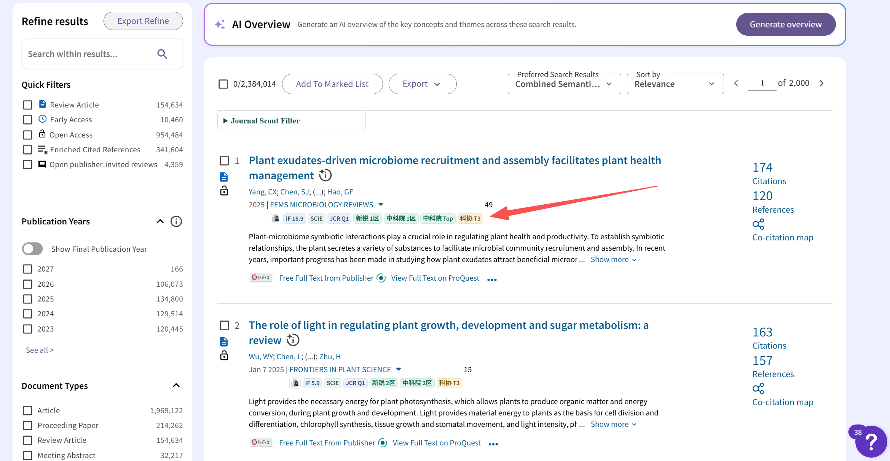
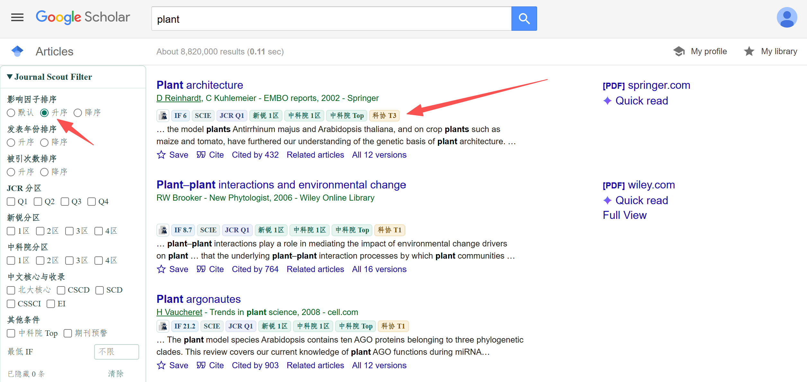
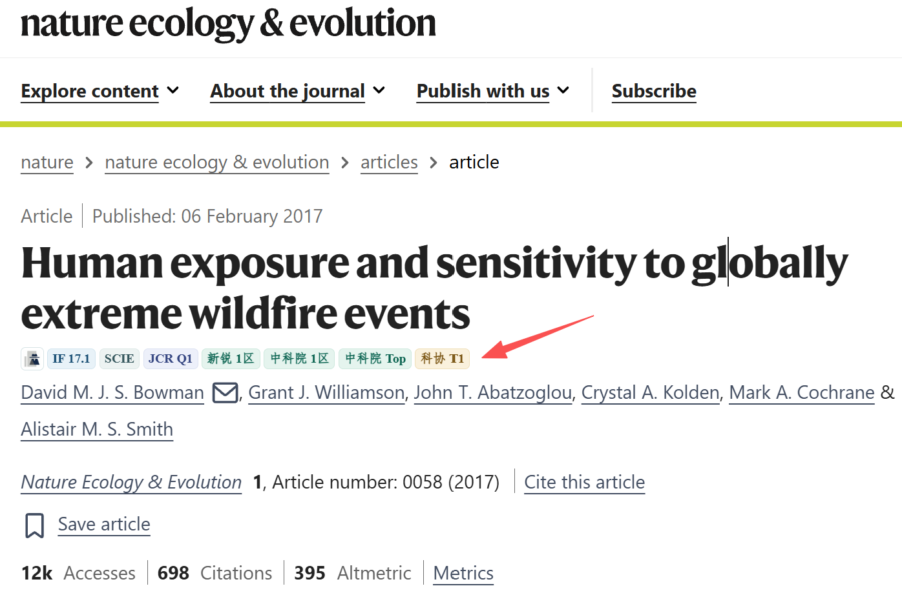
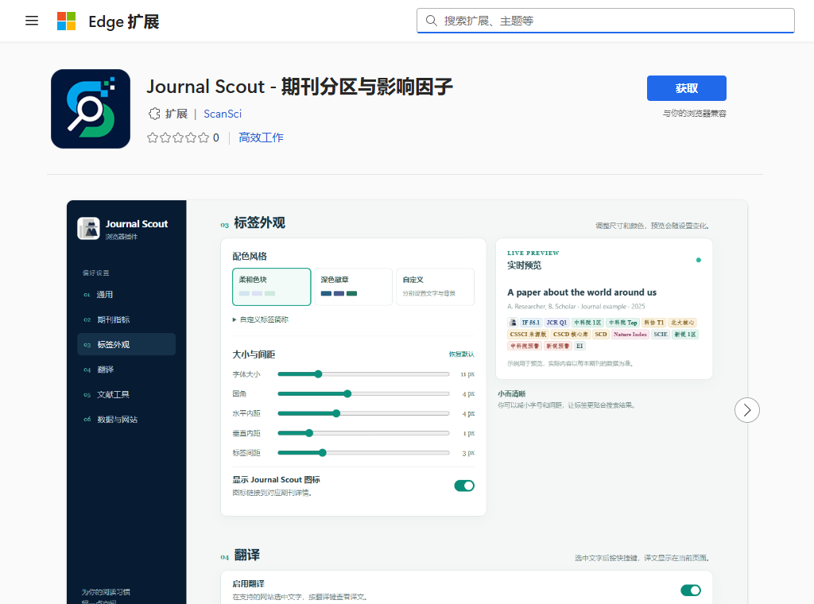
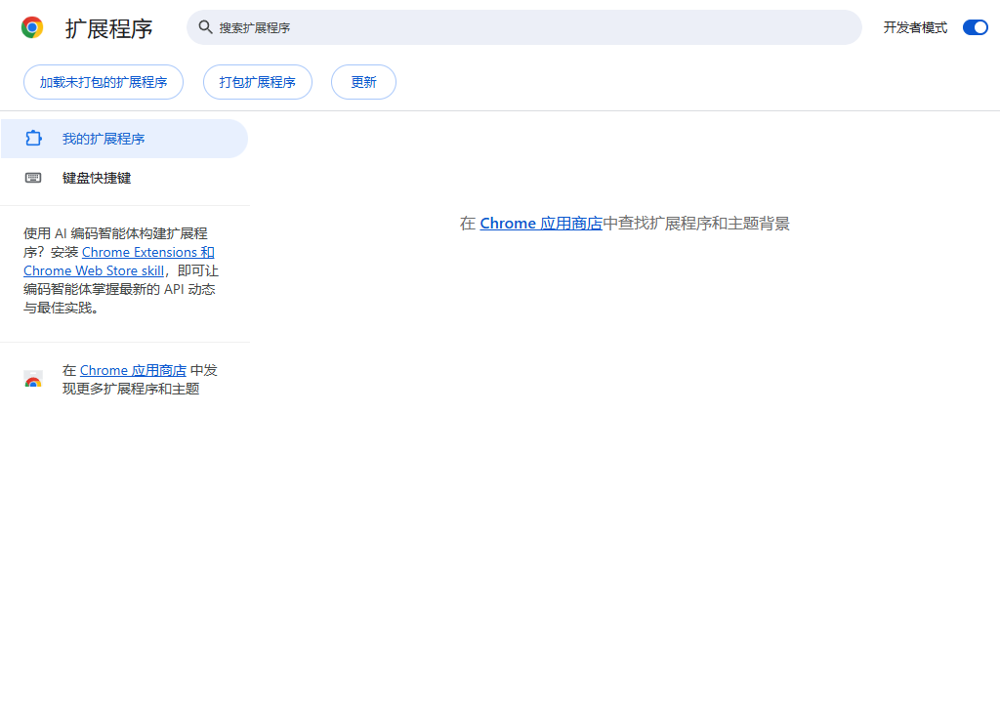

JOURNAL SCOUT FOR BROWSER
让期刊信息
跟随你的阅读。
浏览论文时直接查看期刊信息。Edge 可选官方商店版或离线版：商店版自动更新，离线版更新更快但需手动更新。Chrome 和 Firefox 的安装方法见下方。
手动安装包 v0.1.8Edge 商店已上架桌面浏览器
文献浏览示意
RESEARCH ARTICLE · JOURNAL SCOUT
Understanding our
changing world
changing world
SEE IT IN ACTION
效果展示
期刊标签和筛选工具直接融入文献检索页面；点击截图可查看原图。



INSTALLATION GUIDE
选择你的浏览器
Edge 商店版自动更新；离线版更新更快。Chrome 和 Firefox 的安装步骤也在这里。
Microsoft Edge商店版或离线版 · Edge 116 或更高
请选择一种安装方式，不要同时安装，以免页面出现重复标签。
安装步骤
- 点击「获取」在商店页面确认发布者是「ScanSci」，点击「获取」并确认添加。搜索暂时找不到时，直接用上方商店按钮。
- 显示工具栏图标打开 Edge 工具栏的扩展菜单，将 Journal Scout 显示在工具栏，方便打开设置。
- 刷新论文页面打开或刷新 Google Scholar、PubMed 等支持的学术页面。识别到期刊后即可看到标签；点击插件图标可调整显示项目、配色和翻译设置。

安装步骤
- 下载并解压下载上方 ZIP，解压后保留文件夹。
- 打开 Edge 扩展页在地址栏输入
edge://extensions，打开右上角的「开发人员模式」。 - 加载插件点击「加载解压缩的扩展」，选择解压后的文件夹（里面有
manifest.json）。
手动更新：新版本发布后下载新版 ZIP，解压并覆盖原文件，再到 edge://extensions 点击「重新加载」。
Google Chrome手动安装 · Chrome 116 或更高
下载插件安装包ZIP · v0.1.8
Chrome 加载解压版 开启右上角「开发者模式」，然后点击左上角「加载未打包的扩展程序」，选择刚才解压的插件文件夹。
- 下载并解压解压上面的 ZIP 文件，保留解压后的文件夹。
- 打开扩展页面在 Chrome 地址栏输入
chrome://extensions并回车，打开并保持「开发者模式」。 - 加载插件点击「加载已解压的扩展程序」，选择解压后的文件夹（包含
manifest.json）。 - 开始使用在工具栏扩展菜单中固定「ScanSci 文献助手」，再刷新已打开的论文页面。

Firefox桌面版 · Firefox 140 或更高 · 临时安装
下载 Firefox 测试包XPI · v0.1.8
- 下载测试包下载上面的 XPI 文件，无需解压。
- 打开调试页面在 Firefox 地址栏输入
about:debugging#/runtime/this-firefox并回车。 - 临时载入点击「临时载入附加组件」，选择刚才下载的 XPI 文件，然后刷新论文页面。
关于 Firefox 安装当前测试包尚未签名，只能临时载入；退出 Firefox 后需要重新载入。长期安装及自托管自动更新需要 Mozilla 签名。
更新与旧版迁移
Edge 商店版：Edge 自动更新，但新版本要等商店审核。期刊数据继续从 ScanSci 在线获取。
Edge 离线版：新包发布后可更快下载；下载新版、覆盖原文件，再点「重新加载」即可。
从解压版切换：安装商店版后，请在 edge://extensions 中停用旧的「ScanSci 文献助手」，避免同一页面出现两套标签。两种安装的设置独立，需重新配置；如果有旧收藏，请先在原插件中导出。
Chrome 手动安装版：下载新版 ZIP，覆盖原插件文件夹，在 chrome://extensions 中点击「重新加载」，再刷新论文页面。保留原目录以继续使用已有设置。